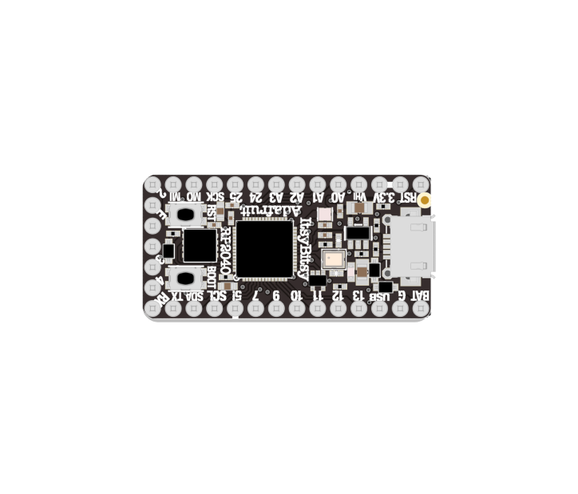

The central component at the heart of your projects. It runs code, reads and processes sensor data, and controls outputs (lights, motors, speakers, etc.)
The ItsyBitsy RP2040 is a versatile development board powered by a 32-bit Cortex M0+ microcontroller. Compared to the ItsyBitsy M4, the RP2040 replaces two analog pins with two additional digital pins. The RP2040 affords greater flexibility in GPIO pin usage, but extra planning and research may be needed to fully leverage this advantage.
For detailed information on the ItsyBitsy RP2040, refer to Adafruit’s documentation:
This includes information on how to re-install or update CircuitPython, as well as how to switch between Arduino and CircuitPython modes.